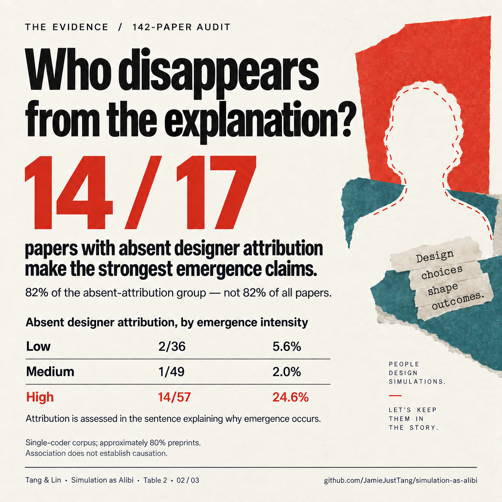
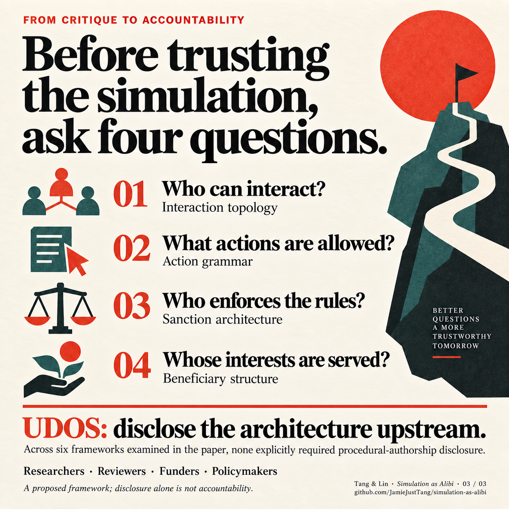
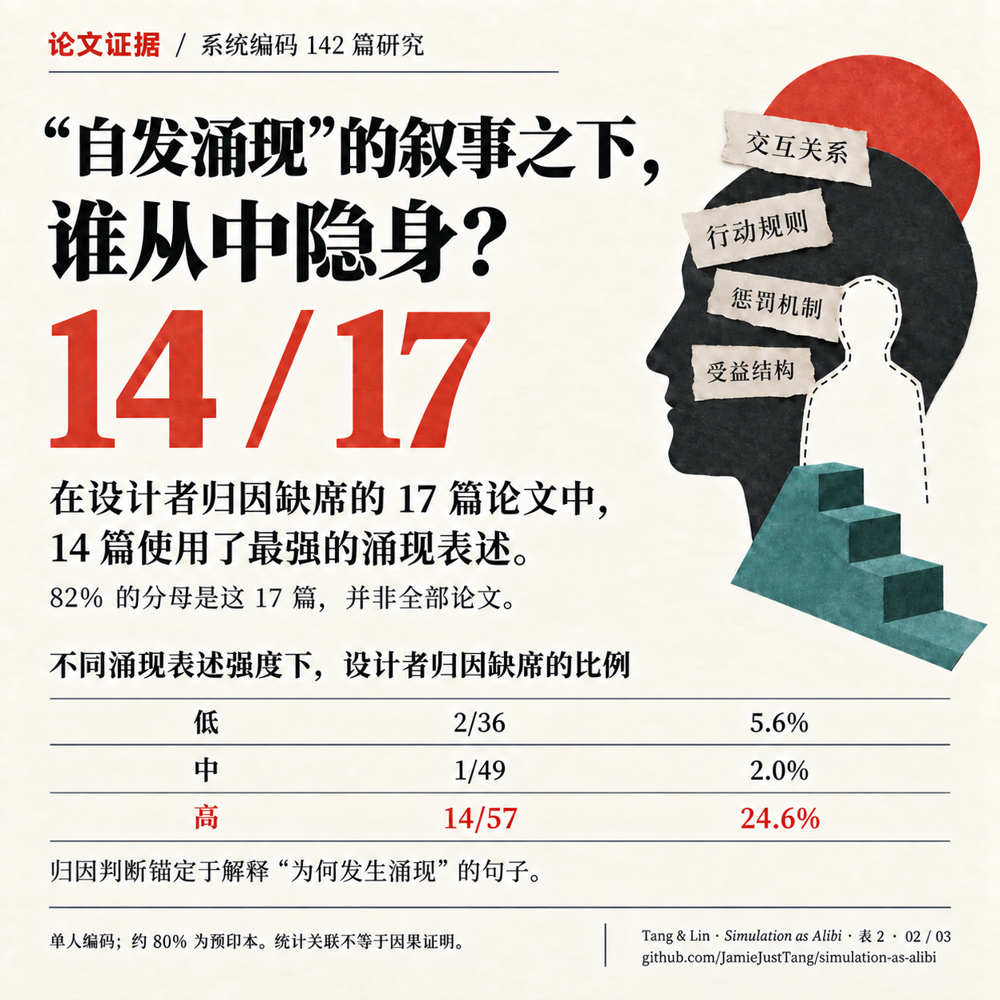
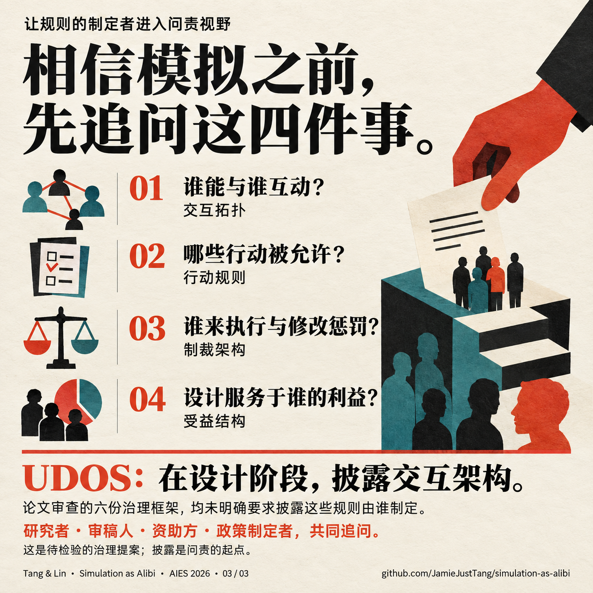

<!doctype html><html lang="zh-CN"><meta charset="utf-8"><meta name="viewport" content="width=device-width,initial-scale=1"><title>Simulation as Alibi · Social cards</title><style>body{margin:0;padding:32px;background:#f3efe5;color:#172124;font-family:system-ui}main{max-width:1500px;margin:auto}h1{font-size:28px}h2{margin-top:40px}section{display:grid;grid-template-columns:repeat(3,minmax(0,1fr));gap:20px}img{width:100%;height:auto;display:block}a{color:inherit}p{line-height:1.6}@media(max-width:760px){section{grid-template-columns:1fr}body{padding:18px}}</style><main><h1>Simulation as Alibi</h1><p>谁写了规则？ · 3 张一组 · 点击图片打开原图<br><a href="captions.md">发布文案 / Posting copy</a></p><h2>English · X</h2><section><a href="en/01_rules.png"></a><a href="en/02_evidence.png"></a><a href="en/03_disclosure.png"></a></section><h2>简体中文 · 小红书</h2><section><a href="zh/01_rules.png"></a><a href="zh/02_evidence.png"></a><a href="zh/03_disclosure.png"></a></section></main></html>